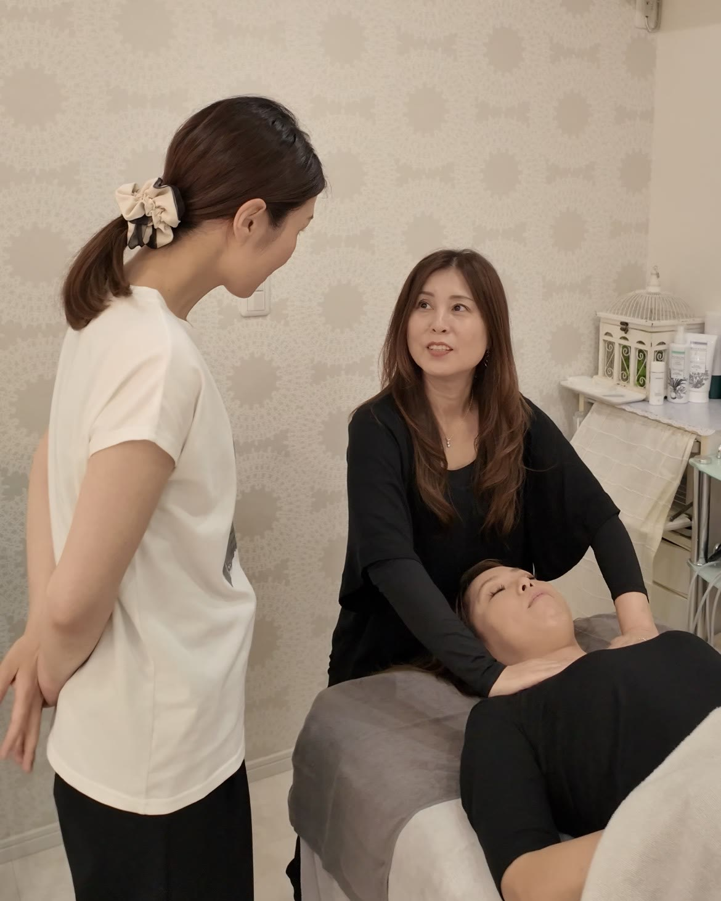
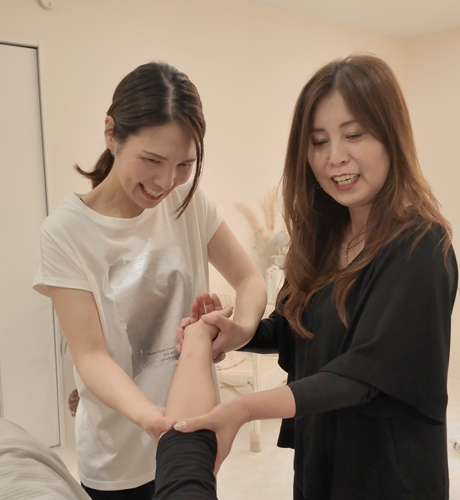
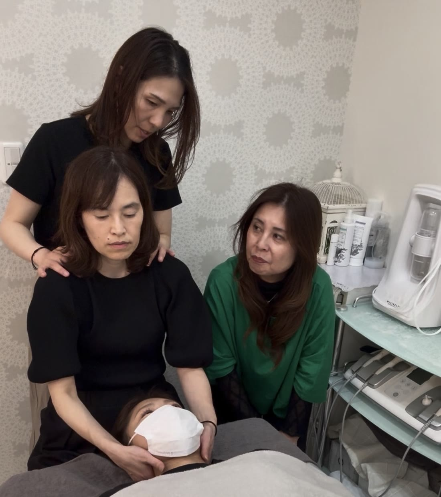
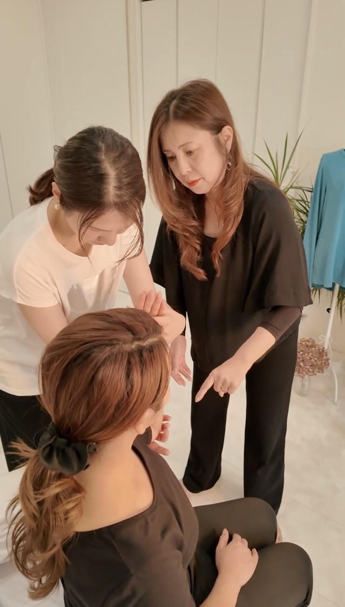
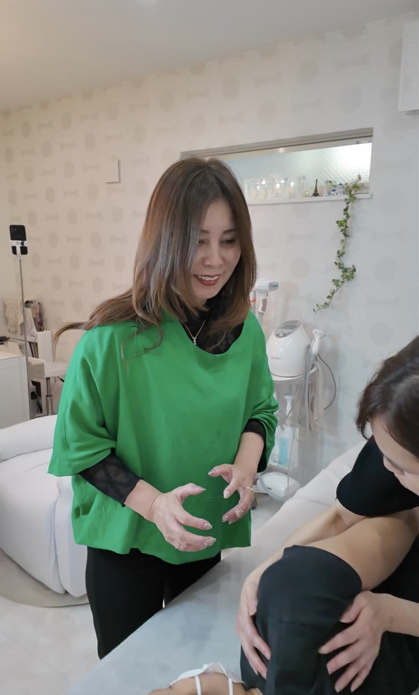
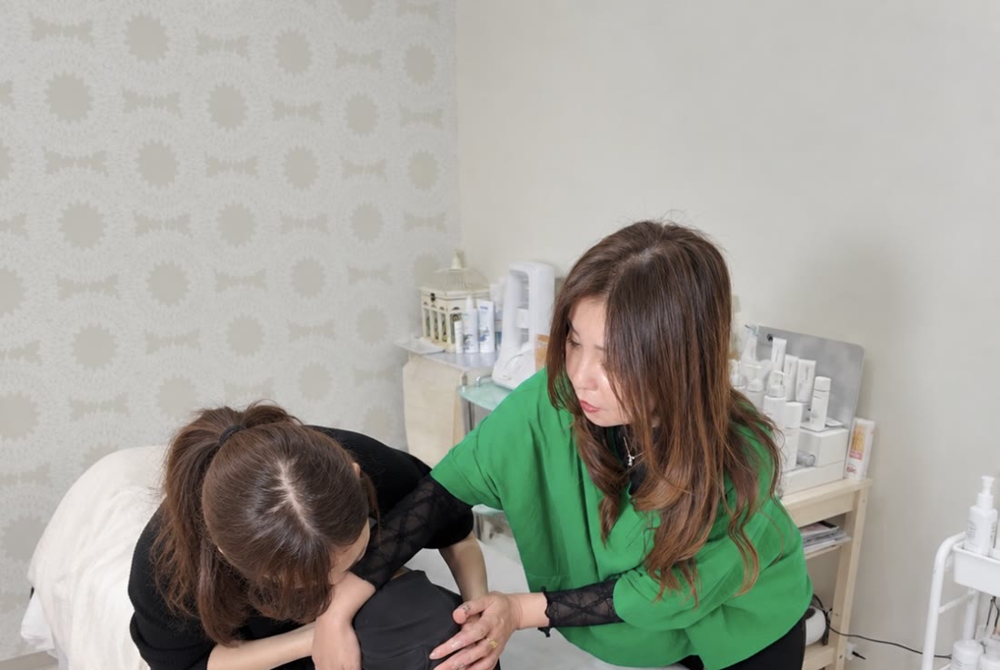
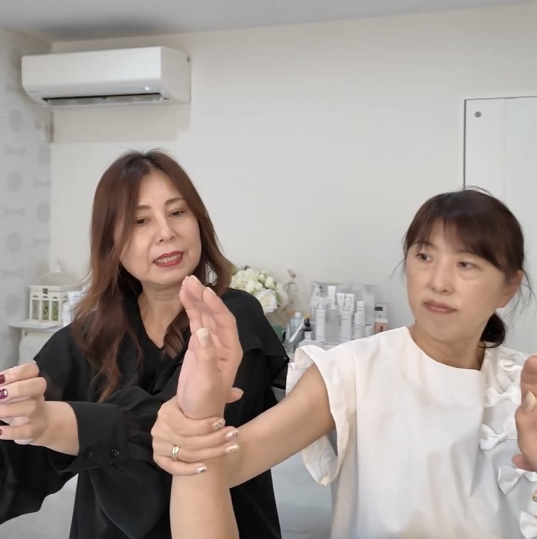
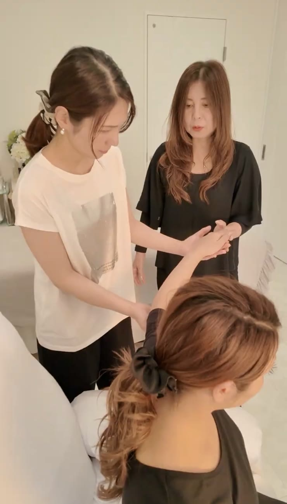
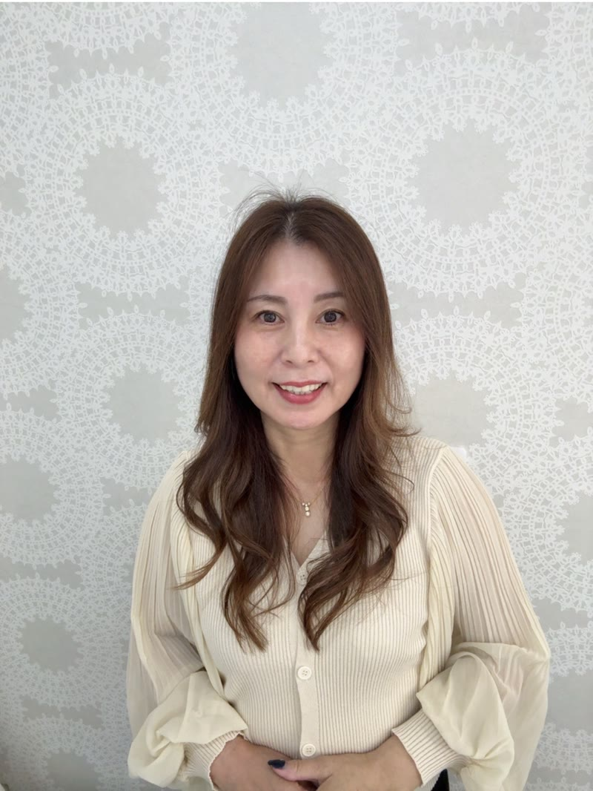

美顔神経エステスクール
商標も取得した
日本初の技術
美顔神経エステ無料体験会
開催スケジュール
11/25（水）
10:00〜12:00
大阪市内参加費 無料
BISHIN 代表
松田 葉子
月商
100万円
サロン運営
美容業界
約20年
現場での経験
美容サロン
2店舗
運営
自分とお客様の健康を大切にしながら
『長く愛されるセラピスト』を
目指すあなたへ
月商100万円サロンオーナーが直接指導

＊募集開始と予約が殺到する無料体験会
体験会の内容
体験できること ①
美顔神経エステを学ぶ
筋肉やリンパではなく、「神経」にアプローチする技術の考え方を、松田葉子が直接お伝えします。
今のメニューとの違いや、強い圧に頼らない理由が分かります。体験できること ②
美顔神経エステを体験する
実際に体験しながら、施術の流れや力加減を確かめます。
「自分の身体に負担が少ないか」を、ご自身の感覚で判断できます。
勉強会の日程
11/25（水）
10:00〜12:00
- 参加費
- 無料
- 開催地
- 大阪市内で開催
＊すぐに埋まってしまうので、
申し込みに制限時間がございます。
初回のページ表示から24時間
お申し込み受付は終了しました。
Problem
こんなお悩みありませんか？
施術は好きなのに、
年々手首や肩、腰がつらくなってきた
強い圧に頼る施術を、
5年後・10年後も続けられるか不安
近くのサロンとメニューが似ていて、
値引きしないと選んでもらえない
新しいメニューを入れたいけれど、
どの技術が自分のサロンに合うか分からない
気になる技術はあっても、
受講料を払う前に、自分の手で確かめたい
好きな仕事なのに、
なぜ不安が消えないの？
身体のつらさや、この先への不安には、
次のような背景が考えられます。
01
力と時間で結果を出す施術になっている
強い圧や長い手技で効果を出しているため、
施術の数が増えるほど、
手首・肩・腰に疲れがたまっていく。02
体力がそのまま収入の上限になっている
1日に受けられる人数が体力で決まり、
身体を休めると、
そのぶん売上が減ってしまう。03
他のサロンと比べられやすいメニューになっている
小顔やリフトアップなど、似たメニューが多いと、
お客様は価格で選びがちに。
値下げで人数を増やすほど、
身体の負担も増えていく。
だからこそ、新しい技術を選ぶときは、
「お客様に喜ばれるか」だけでなく、
「自分の身体に負担が少ないか」まで
確かめることが大切です。
Future
身体を守りながら、
「あなたにお願いしたい」と
選ばれ続ける未来へ
悩みを手放したセラピストが
目指せる、3つの変化
01
自分の体を大切にしながら施術できる
強い圧に頼らない施術なら、
手首・肩・腰を守りながら、
その日最後のお客様まで丁寧に向き合える。02
年齢を重ねるほど、経験が価値になる
体力を気にして働く日を減らすのではなく、
積み重ねた経験を強みにして、
5年後・10年後も好きな仕事を続けていける。03
価格ではなく、技術で選ばれる
まだ提供できるサロンが少ない技術だからこそ、
値下げをしなくても、
「あなただからお願いしたい」と
指名されるサロンへ。
そしてお客様からは、
「顔だけじゃなく、身体も心も楽になった」
と言われる。
自分とお客様、両方の健康を大切にできる働き方が、
『長く愛されるセラピスト』への道です。
※感じ方や成果には個人差があります。
Trial
その未来への一歩を、
無料体験会で確かめませんか？
受講を決める前に、
技術の考え方と施術の感覚を、
ご自身で確かめられる2時間です。
体験できること ①
美顔神経エステを学ぶ
筋肉やリンパではなく、「神経」にアプローチする技術の考え方を、松田葉子が直接お伝えします。
今のメニューとの違いや、強い圧に頼らない理由が分かります。体験できること ②
美顔神経エステを体験する
実際に体験しながら、施術の流れや力加減を確かめます。
「自分の身体に負担が少ないか」を、ご自身の感覚で判断できます。
美顔神経エステスクールBISHIN代表、
そして自身も月商100万円
サロンオーナーである
松田 葉子が直接指導
11/25（水）10:00〜12:00
大阪市内で開催・参加費無料
＊募集開始と予約が殺到する無料体験会
Atmosphere
体験会の雰囲気
講師がすぐそばで、
手の位置や力加減を確かめながら進めます。



＊募集開始と予約が殺到する無料体験会
体験会の内容
体験できること ①
美顔神経エステを学ぶ
筋肉やリンパではなく、「神経」にアプローチする技術の考え方を、松田葉子が直接お伝えします。
今のメニューとの違いや、強い圧に頼らない理由が分かります。体験できること ②
美顔神経エステを体験する
実際に体験しながら、施術の流れや力加減を確かめます。
「自分の身体に負担が少ないか」を、ご自身の感覚で判断できます。
勉強会の日程
11/25（水）
10:00〜12:00
- 参加費
- 無料
- 開催地
- 大阪市内で開催
＊すぐに埋まってしまうので、
申し込みに制限時間がございます。
初回のページ表示から24時間
お申し込み受付は終了しました。
Lesson
講師が丁寧に指導します
手元を見ながら、直接指導。
講師の手の位置とご自身の手を見比べながら、
触れる場所や力加減を、一つずつ確かめていきます。



Q & A
よくあるご質問
- Q
美容業界が未経験でも参加できますか？
- A
はい。
美顔神経エステの考え方から順にお伝えし、
講師がそばで手元を確かめながら進めます。 - Q
参加したら、受講しないといけませんか？
- A
いいえ。
体験会は、技術をご自身で確かめていただく場です。
受講するかどうかは、体験したうえでご自身でお決めください。 - Q
力に自信がなくても大丈夫ですか？
- A
強い圧に頼らない技術なので、力に自信がない方もご参加いただけます。
手首や肩に痛みがある方は、当日講師にお伝えください。 - Q
今のサロンメニューに取り入れられるか知りたいです。
- A
エステ・リンパ・ネイルなど、今のメニューとの違いや組み合わせ方を、
当日講師に直接ご相談いただけます。 - Q
参加費・会場・持ち物は？
- A
参加費は無料です。
11/25（水）10:00〜12:00に、大阪市内で開催します。
会場の詳細や持ち物は、お申し込み先のLINEでご案内します。
Profile
講師プロフィール

美顔神経エステスクールBISHIN 代表
松田 葉子
美容業界約20年。
エステティシャン・ネイリストとして、
自宅の小さなネイルサロンからスタート。
3人の子どもを育てながら、
家事や子育てと仕事を両立する毎日。
「このままで大丈夫かな」と、
不安を抱えながら働いていた時期もありました。
それでも美容の仕事を諦めず、
「もっとお客様に喜ばれる技術はないか」と
学び続けるなかで、
美顔神経エステに出会う。
現在は、2店舗の美容サロンを運営。
自身も月商100万円のサロンオーナーとして現場に立ち続けている。
お客様を笑顔にしながら、
セラピスト自身も無理なく、
長く美容の仕事を続けられるように。
その想いで、美顔神経エステを伝えている。
体験会の内容
体験できること ①
美顔神経エステを学ぶ
筋肉やリンパではなく、「神経」にアプローチする技術の考え方を、松田葉子が直接お伝えします。
今のメニューとの違いや、強い圧に頼らない理由が分かります。体験できること ②
美顔神経エステを体験する
実際に体験しながら、施術の流れや力加減を確かめます。
「自分の身体に負担が少ないか」を、ご自身の感覚で判断できます。
体験会の日時
11/25（水）
10:00〜12:00
- 参加費
- 無料
- 開催地
- 大阪市内で開催
＊すぐに埋まってしまうので、
申し込みに制限時間がございます。
初回のページ表示から24時間
お申し込み受付は終了しました。
無料体験会に
ご参加ください
無料体験会はこちら
＊募集開始と予約が殺到する無料体験会